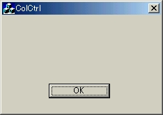
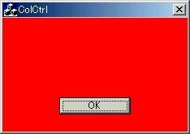
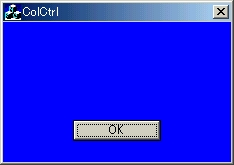
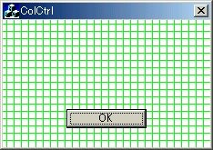

←Back［背景色の変更のフレームワーク］ -- Up［コントロールの背景色を変更する］ -- Forward［スタティックコントロール］→
前節では，描画色の変更の流れについて解説した．本節ではダイアログの背景色を変更する具体的な方法について解説する．本節を読むにあたっては，「背景色変更のフレームワーク 」を一読されることを願う．
| ●ダイアログの背景色を変更する |
「コントロールの背景色を変更する」で共通に使用するプロジェクトを新規に作成する．
- [新規作成]-[MFC App Wizard]を選択．
プロジェクト名：ColCtrl，"新規にワークスペースを作成する"を選択．
OKボタンを押す．- "作成するアプリケーションの種類"でダイアログベースを選択．
次へボタンを3回押す．- 作成されるアプリケーションクラスがCColCtrlApp，CColCtrlDlgであることを確認．
終了ボタンを押し，OKボタンをおす．- Resourceタブをクリック．
Dialogの中のIDD_COLCTRL_DIALOGをダブルクリックで開く．(初期状態で開かれているはず．)- OKボタンのみを残し，他のコントロールは全て削除．
[ビルド]-[実行]を押すと，以下のようなものが表示される．
figure2.1 実行結果実行結果を見れば分かるが，何もしていないので背景色が変更されるはずがない．
描画色を変更するためには，ウィンドウから送られてくるWM_CTLCOLOR メッセージをつかまえればよいと述べた．このメッセージが送られてきたときに実行される関数（ハンドラ）を定義する．
"関数の追加"ボタンを押す．
"コード編集"ボタンを押す(ソース画面に切り替わる)．するとOnCtlColorという関数が追加されたであろう．アプリがWM_CTLCOLOR メッセージを取得するとこの関数が呼ばれることになる．この関数がブラシハンドルを返却していることに気づいただろうか？この関数の中でデバイスコンテキストpDCに関して何らかの変更を加えたとしても，その変更が認識されるかは全くの別問題 である．認識させるためには，背景のペイントに使われるブラシのハンドルを返す必要がある．（そのように設計されているので仕方がない）．
とりあえず以下のように編集しておく．CDialogクラスのOnCtlColor関数を呼び，その戻り値をこの関数の戻り値としていることがわかる．オブジェクト指向プログラミングを熟知している方ならお分かりだと思うが，CColCtrlColorはCDialogクラスのサブクラスであり，CColCrtlColor::OnCtlColor関数は，CDialog::OnCtlColorのオーバーライドである．
それでは，OnCtlColor関数の引数について説明する．
- CDC *pDC
- コントロールのデバイスコンテキストへのポインタ．(これがコントロールを描画するためのDCである． 故にこれを変更することで描画色変更が可能になる．)
- CWnd *pWnd
- カラーを調べるコントロールへのポインタ．(これがなぜ必要かについては，後で述べることにする．)
- UINT nCtlColor
- コントロールのタイプを指定する、次のいずれかの値．この値を調べることでどのコントロールかが判別できる．
- CTLCOLOR_BTN ボタン コントロール
- CTLCOLOR_DLG ダイアログ ボックス
- CTLCOLOR_EDIT エディット コントロール
- CTLCOLOR_LISTBOX リスト ボックス コントロール
- CTLCOLOR_MSGBOX メッセージ ボックス
- CTLCOLOR_SCROLLBAR スクロール バー コントロール
- CTLCOLOR_STATIC スタティック コントロール
と長々説明してもよくわからないと思うので，実際ダイアログの背景色を変更していこう．
それではダイアログの背景を変えていこう．先ほど述べたことをふまえると，背景となるブラシを作成し，OnCtlColorで返せばよいことになるが，OnCtlColor関数を呼び出したのがどのコントロールやダイアログかを判定しなければならないが，その情報は，引数であるnCtlColorに格納されているので，これを使用すればよい．
まずは，メンバ変数を定義する(ColCtrlDlg.hにて)．
メンバ変数を定義してもブラシが作成されたわけではない．ColCtrlDlg.cpp内のOnInitDialog関数で，さきほど追加したメンバ変数のブラシを作成する．ブラシは赤色にする．
OnCtlColor関数を以下のように修正する．
ここまで記述したら実行してみよう．するとダイアログの背景色が赤色になるはずである．OnCtlColorにおいて，呼び出したウィンドウまたはコントロールがダイアログであれば赤色のブラシを返し，それ以外のコントロールであったら通常のブラシを返すように指定しているためである．したがって，OKボタンが通常の色のままになっているだろう．

figure2.2 ダイアログの背景色を赤にするどい人はもう分かったかと思うが，”コントロールの背景色”というと何かの「色」を想像するのだが，実際は"指定されたブラシで塗りつぶす"のであるから，変わったブラシを指定することでいろいろな背景色(背景模様)のダイアログを作成できる．以下に一例を示す．
m_brDlg.CreateSolidBrush(RGB(0,0,255));
青色の純色のブラシm_brDlg.CreateHatchBrush(HS_CROSS,RGB(0,255,0));
緑色で水平と垂直の格子ハッチブラシ
figure2.3 ダイアログの背景色変更例1
figure2.4 ダイアログの背景色変更例2余計なお世話かもしれないが，スタティックテキストを見づらくなるという危険性もあるので，背景色はできるだけ純色であることをお勧めする．
←Back［背景色の変更のフレームワーク］ -- Up［コントロールの背景色を変更する］ -- Forward［スタティックコントロール ］→
VisualC++でソフトを作ろう (c) 藤門千明